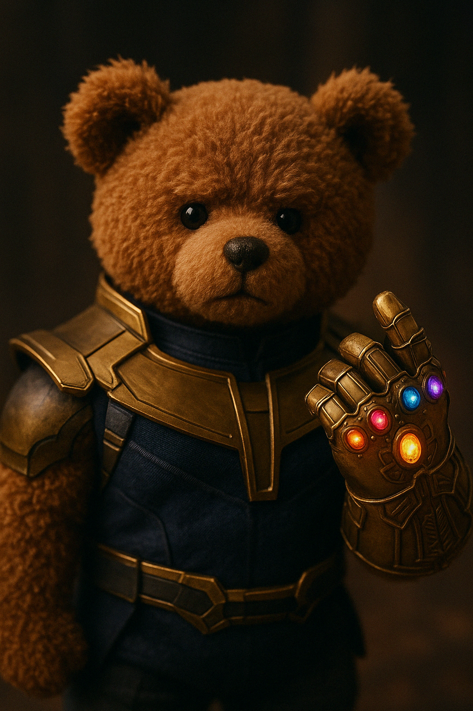

Coffee Machine
isometric cutaway 3D render of a coffee machine revealing a miniature morning train station inside — tiny commuters waiting at platforms, espresso trains moving on rail lines made of drip tubes, steam vents working like tunnels, coffee bean sacks stacked like luggage — soft light, high detail, stainless steel and glass textures, warm coffee tones and pastel accents, no yellow tint, clean and whimsical world inside a common machine
Video Description: An isometric coffee machine comes to life as a miniature morning train station. Tiny commuters wait on platforms, steam puffs from tunnels, and espresso trains travel along drip-tube tracks. The scene glows with soft warm light, showing shiny steel surfaces, stacked coffee bean sacks, and a whimsical, cozy world hidden inside the machine.
Doraemon Pokemon Card
A rare, hyper-realistic close-up of a holographic Pokémon-style trading card, slightly tilted, with only part of a thumb visible. Title: "Doraemon", with a Psychic-type icon. On the card, Doraemon is illustrated in a semi-realistic Pokémon card style, retaining his classic look with a playful and adventurous pose. The holofoil surface shimmers with rainbow and gold light.
Video Description: The camera slowly zooms in as the 2D card art transforms into a 3D, semi-realistic Doraemon who steps out of the card in a magical glow.
Samurai Doge
A Shiba Inu dog dressed as a samurai warrior with traditional conical hat, white cape, and katanas. The scene is set in a cozy Japanese-style interior with rainy windows and warm lighting.
Video Description: The video opens in a warm, softly lit Japanese-style café. Rain gently falls outside the window, casting reflections on the wooden floor. The camera slowly zooms in or pans to reveal Cheems, a lifelike Shiba Inu, dressed as a wandering samurai. He wears a traditional straw hat, a worn white cloak, and three katanas on his waist, referencing One Piece's Roronoa Zoro.

Lich King
A double exposure image featuring the silhouette of Arthas, the Lich King from the World of Warcraft series. The details are sharp, with intertwining cold elements extending across the vastness of Northrend. A wide-angle view of Frostmourne in hand is accented by Icecrown Citadel, creating a breathtaking effect.
Video Description: His figure emerges as Frostmourne slams into the ground with a burst of frost. Inside his body, a moving landscape reveals Northrend — blizzards sweep over mountains, and Icecrown Citadel rises through the mist.

Thanos Teddy Bear
A cinematic, atmospheric close-up shot parodying the iconic scene from The Avengers where Thanos gathers all five Infinity Stones and snaps his fingers. In this version, a slightly oversized teddy bear dressed in Thanos's costume performs the snap, creating a unique blend of power and contemplation while retaining the teddy bear's inherent cuteness.
Video Description: A dramatic, atmospheric short film scene. The camera slowly zooms in on a serious-looking teddy bear wearing detailed golden armor and the Infinity Gauntlet. The bear stands in a dimly lit, smoky room, its fur gently ruffling in the breeze. Glowing Infinity Stones pulse with energy on the bear's gauntlet. Ominous music swells. The bear raises its paw and snaps its fingers — a bright burst of light erupts. Cut to black. Text fades in: "The cutest end begins"
Hearthstone Patches
Design a set of 6 Hearthstone-themed embroidered patches for bags or clothing, featuring exquisite details and striking, iconic textures. The craftsmanship is stunning and full of character. The background material is a fabric texture.
Video Description: Create a cozy, animated sequence set on a rustic tabletop. The camera slowly pans over a collection of detailed, hand-stitched fabric patches, each representing a different Hearthstone class or theme — swirling arcane magic, a glowing frost skull, a playful frog, a mighty axe, and the iconic Darkmoon Faire ticket. Soft ambient music plays in the background, with subtle animations: the swirl glows and spins gently, lightning flickers around the staff, the axe glints in candlelight, the frog winks, and the moon on the ticket pulses. The scene ends with the Hearthstone logo subtly embroidered across the screen as if being stitched live.